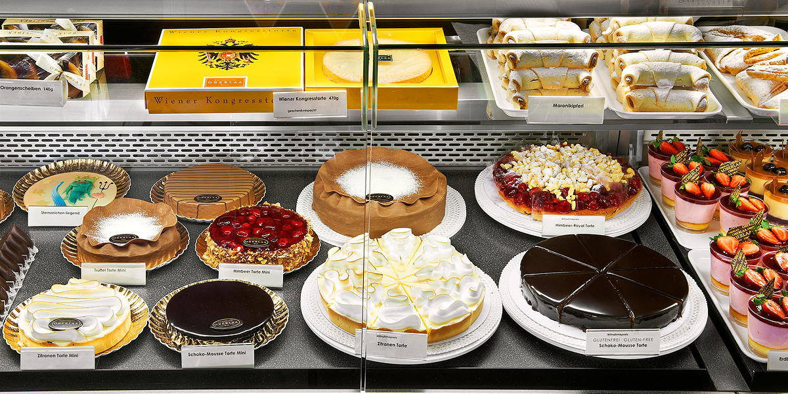

Geschichte von Oberlaa
Ursprünglich bildete der Ort mit dem flussabwärts liegenden Unterlaa eine Einheit unter dem Namen Laa und ist erstmals 1140 in Aufzeichnungen im Stift Klosterneuburg erwähnt. Oberlaa als solches wurde erstmals 1324 urkundlich genannt. 
Standort BahnhofCity
Der Ort litt unter beiden Wiener Türkenbelagerungen, 1809 durch die Truppen Napoleons und mehrmals unter Pest und Cholera. 1849 endete die Grundherrschaft, Oberlaa wurde autonome Ortsgemeinde in Niederösterreich. 1872 wurde die Donauländebahn mit ihrer Station Oberlaa eröffnet, die Felder im Ortsgebiet in West-Ost-Richtung quert. Die Bahn bietet eine Zufahrt von Bahnstrecken im Süden Wiens zum Handelshafen an der Donau; im bis 1945 geführten Personenverkehr war sie von sehr geringer Bedeutung.
1890/1892 wurden die Felder der Gemeinde nördlich der Donauländebahn an das Wiener Stadtgebiet angeschlossen und Teil des 10. Wiener Gemeindebezirks. Nach dem „Anschluss“ Österreichs an das Deutsche Reich wurde Wien mit Gesetz vom 1. Oktober 1938, wirksam geworden am 15. Oktober 1938, zu Groß-Wien vergrößert. Dadurch kamen nun auch das Ortszentrum von Oberlaa und sein restliches Gebiet südlich der Bahn sowie die Nachbargemeinde Unterlaa zu Wien und wurden Teile des neuen 23. Bezirks, Schwechat. 1946 sollte die Erweiterung Wiens großteils rückgängig gemacht werden; auf Grund eines Vetos der sowjetischen Besatzungsmacht, zu deren Besatzungsgebiet Oberlaa gehörte, geschah dies aber erst 1954. Oberlaa gehörte zu den 17 im Jahr 1938 eingemeindeten Orten, die bei Wien verblieben. Es wurde nun zur Gänze Teil des 10. Bezirks.
1969 wurde bei einer Thermalquelle auf Oberlaaer Gebiet provisorischer Badebetrieb aufgenommen. 1974 wurde das Kurzentrum Wien Oberlaa eröffnet
und die Wiener Internationale Gartenschau 1974 (heute Kurpark Oberlaa) abgehalten; dadurch ist der Ortsname in Wien allgemein bekannt geworden. Seit 1974 war Oberlaa an das Wiener Straßenbahnnetz angeschlossen.Bis 2010 wurden die Badeeinrichtungen zur Therme Wien umgestaltet.
Bis 2017 wurde die U-Bahn-Linie U1 (statt der Straßenbahnlinie 67) zu ihrer neuen südlichen Endstation zwischen der Therme Wien und dem historischen Ortszentrum von Oberlaa verlängert und ist auf dem neuen Streckenteil vom Reumannplatz nach Oberlaa seit dem 2. September 2017 in Betrieb.